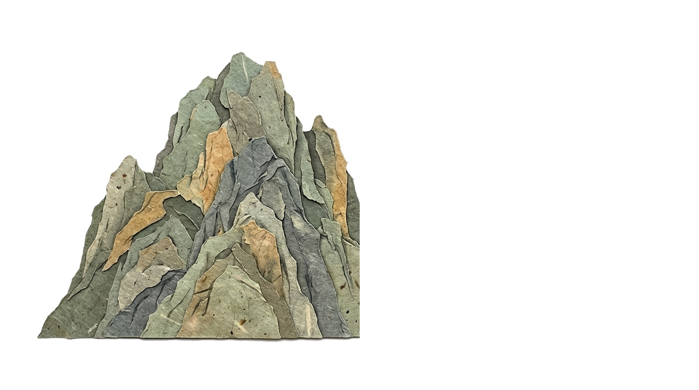
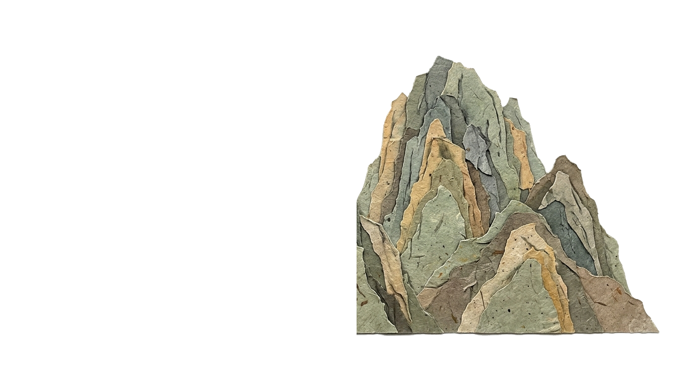
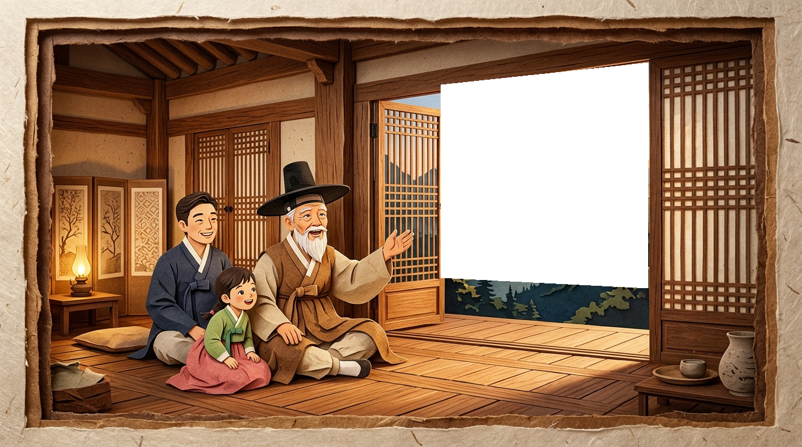
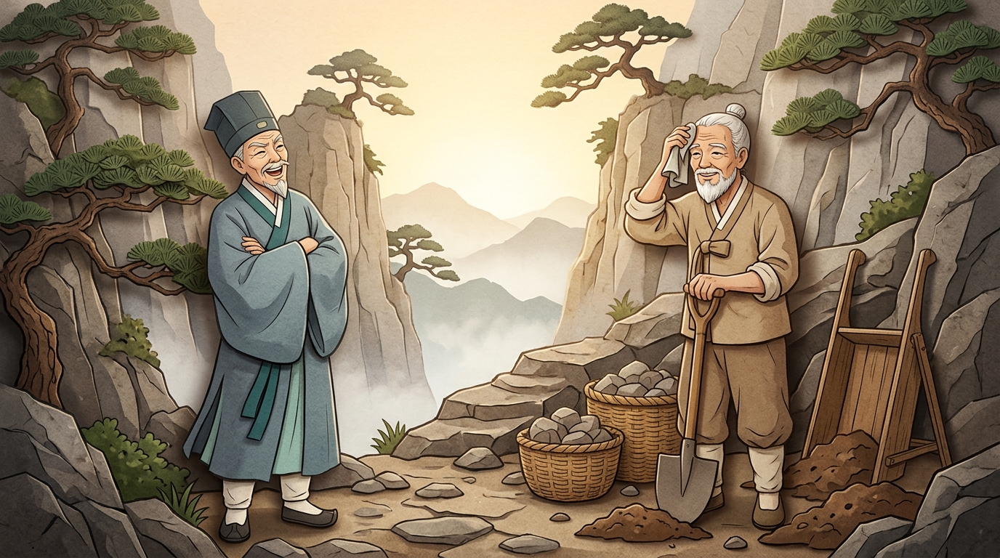

🎬 다층 종이 극장 쇼츠
00:00 / 00:48
우공이산 (愚公移山)









제1장 · 길을 막은 두 산
옛날 중국 북산에 아흔 살이 된 ‘우공’ 할아버지가 살았어요. 집 바로 앞을 거대한 태행산과 왕옥산 두 산이 가로막고 있어, 마을 사람들은 매일 먼 길을 빙 돌아가야 했지요.
愚어리석을 우
公공 공 (할아버지)
移옮길 이
山뫼 산
⚫ 바둑 속 지혜: 처음엔 바둑판이 넓고 불리해 보여도, 포기하지 않고 한 수 한 수 정성을 다해 두면 결국 승리의 길을 열 수 있어요!
💡 확인 퀴즈: ‘우공이산’이 가르쳐 주는 가장 중요한 마음가짐은 무엇일까요?